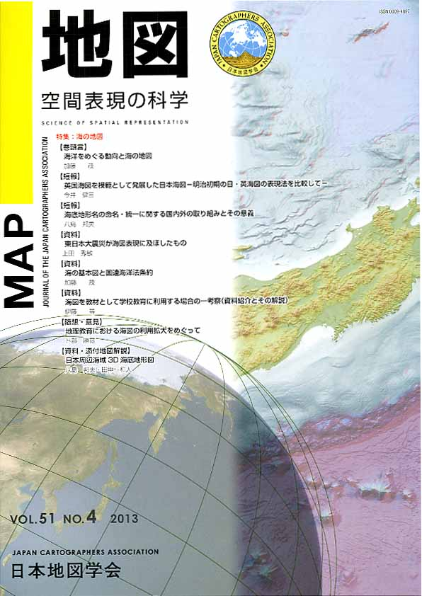
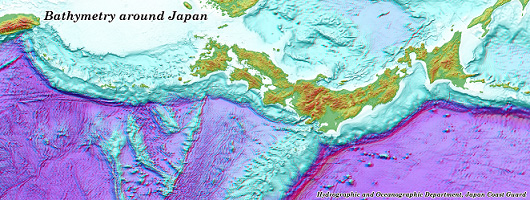

| 最 新 号 | バックナンバー | 添付地図目録 | 投 稿 規 程 |
Vol.51 No.４ （通巻２０４号） ２０１３年 《特集：海の地図》
| 【巻頭言】 | 海洋をめぐる動向と海の地図 | 加藤 茂 |
| 【短報】 | 英国海図を模範として発展した日本海図−明治初期の日・英海図の表現法を比較して− | 今井健三 |
| キーワード：近代的海図、海図製図法、英国海軍測量船シルビア、大後秀勝、狩野派絵師 | ||
| 【短報】 | 海底地形名の命名・統一に関する国内外の取り組みとその意義 | 八島邦夫 |
| キーワード：海底地形名、GEBCO（大洋水深総図）、SCUFN（海底地形名小委員会）、GEBCO海底地形名集、海底地形の名称に関する検討会、海洋管理 | ||
| 【資料】 | 東日本大震災が海図表現に及ぼしたもの | 上田秀敏 |
| キーワード：東日本大震災、精度索引図、国際水路機関、海図図式、new pec | ||
| 【資料】 | 海の基本図と国連海洋法条約 | 加藤 茂 |
| キーワード：海の基本図、国連海洋法条約、領海基線、海洋マッピング | ||
| 【資料】 | 海図を教材として学校教育に利用する場合の一考察（資料紹介とその解説） | 伊藤 等 |
| キーワード：学校教育、地理学習、海図、航海用海図、海底地形図、漁具定置箇所一覧図 | ||
| 【随想・意見】 | 地理教育における海図の利用拡大をめぐって | 卜部勝彦 |
| キーワード：地理教育、海図、学習指導要領、教材用海図 | ||
| 【資料・添付地図解説】 | 日本周辺海域3D海底地形図 | 八島邦夫・田中和人 |
| キーワード：３D海底地形図、海上保安庁海洋情報部、プレートテクトニクス | ||
| 【特別会員名簿】 | ||
| 【年間総目次】 | ||
| 【学会記事】 | ||
| 【お詫びと訂正】 | 第51巻1〜3号における記載の誤りについて | 日本地図学会 編集委員会 |
| 【添付地図】 | 日本周辺海域3D海底地形図 | |
|
≪No.51 No.4 表紙≫ |
|
|  |
|
|
|
≪No.51 No.4 添付地図≫ |
|
 本図を許可なく複製・利用することを禁止します。
|